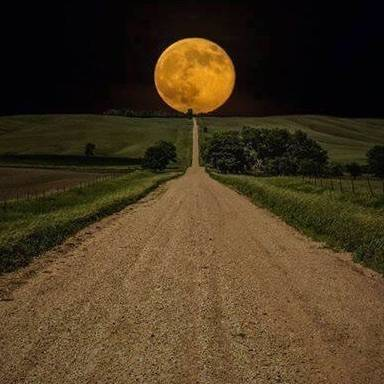
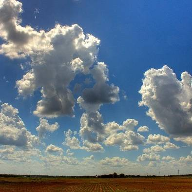

The Moon Illusion
This finally makes sense to me.
-

You know how the moon often looks bigger on the horizon than when it is high in the sky?
-
Of course the moon hasn't actually changed size.
-
This is the "Moon Illusion".
-
But perhaps you will be surprised to learn that it's "apparent size" (which is to say it's measurable angular size — how big it actually looks to your physical eyes) is also unchanged.
-
It *seems* bigger but it doesn't actually *appear* bigger.
This is easily measurable. You can prove it to yourself the next time you see a huge full moon rising. Just hold out your thumb at arms length and note how big the moon is in comparison. Then later in the night when the moon is high and tiny, do it again. It will be the same size in relation to your thumb even though it looks tiny up there.
-
This fact debunks some of the older "explanations" for the Moon Illusion like magnification from the atmosphere. Clearly the illusion is all in your head.
-
I've read explanations a dozen times over the years and honestly they never felt very sensible.
"We perceive the sky as flat and so [words]..." "When compared to buildings and trees it seems bigger because [words]..."
-
I was reading about the Illusion in Wikipedia the other day and a little note in one of their possible explanations finally clicked for me. It seems so *right* that it has become my official favorite.
-
Here goes...
-
We have no real bearing to comprehend the size and shape of the sky. It is just big and largely empty. It is hard to tell what is close and what is far away because the things in the sky aren't things we interact with.
Vs, e.g., cars way down the road. You have a very good sense of how big that car really is.
-
The one thing we do have a decent intuitive sense of is clouds.
-
We see them in the sky all the time. We may not have a clear sense of their absolute size, but we do know this:
-

When they're right over head they look big. As they recede to the horizon they appear smaller and smaller.
-
This fits our intuitive sense of the world. Everything we see looks smaller when it is farther away.
So it's a convincing model of the sky.
-
And it fits factual reality. Clouds are around 100 times further away from us on the horizon vs directly overhead.
They aren't very high up.
-
And their apparent size is correspondingly smaller.
-
This gives us an intuitive sense of the sky, of how things behave in the sky, even though we aren't good at guessing exactly how far away objects in the sky actually are.
-
And there's the rub...
-
The Moon high in the sky is, for all practical purposes, no closer than the moon on the horizon.
Because the moon is very very very high up.
-
So the actual apparent size of the moon does *not* get smaller as it approaches the horizon.
-
But our sense of the sky makes us think it *should*. Just like clouds and airplanes and hot air balloons and everything else we see in the sky.
-
Consequently when we see the moon way out there on the horizon, it seems like it must be bigger. High in the sky it should have grown closer but it didn't grow at all so it seems smaller.
I think some other factors also contribute, like comparison to distant objects and reduced contrast making minute details easier to see clearly. But I think this is the primary driver of our perception of size.
-
🌕
-
"In that exalted-humbling moment of pure delight I felt myself at once both small and great." — Dr. Faust